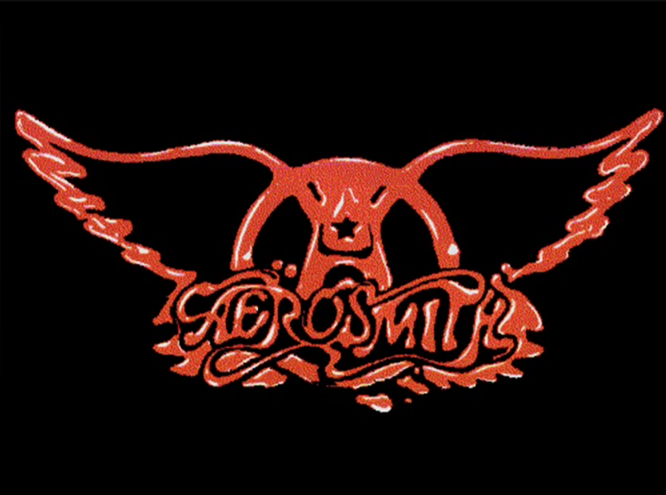
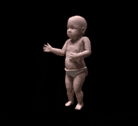

| | | (_) | | (_) | | | | |_ _| / _| | | (_) | |_| |_ ___| |_ ___ _ __ _ __ _ __| | ___ | | __ _ | | _ __ | |_ ___ _ __ _ __ ___ __ _| |_ _ ___ __ _ | _ | / __| __/ _ \| '__| |/ _` | / _` |/ _ \ | |/ _` | | || '_ \| _/ _ \| '__| '_ ` _ \ / _` | __| |/ __/ _` | | | | | \__ \ || (_) | | | | (_| | | (_| | __/ | | (_| | _| || | | | || (_) | | | | | | | | (_| | |_| | (_| (_| | \_| |_/_|___/\__\___/|_| |_|\__,_| \__,_|\___| |_|\__,_| \___/_| |_|_| \___/|_| |_| |_| |_|\__,_|\__|_|\___\__,_| |
|||
MUSEO DEL INTERNET |
|||
Daisy Bell, La primera canción cantada por una computadoraLa primera canción cantada por una computadora fue "Daisy Bell" (o "Bicycle Built for Two") en 1961, interpretada por una IBM 7094 en los Bell Labs. Los ingenieros John L. Kelly Jr. y Carol Lockbaum programaron la voz sintetizada, siendo un hito histórico de la tecnología que sorprendió por su capacidad de síntesis de voz. Mapa de ArpanetUn mapa de ARPANET, el precursor de Internet, que muestra las 111 terminales de computadora conectadas a la red en 1977 ARPANET fue creada por el Departamento de Defensa para que los investigadores pudieran compartir información y recursos. Inicialmente, la red estaba limitada a universidades e instituciones de investigación. Primeros sitios WebEl primer archivo MP3El primer MP3 de la historia fue la versión a capela de «Tom's Diner» de Suzanne Vega. Karlheinz Brandenburg, quien trabajó en el formato MP3, usó la canción como referencia para ver cómo el algoritmo de compresión manejaría la voz humana La música instrumental había sido más fácil de comprimir, pero la voz de Vega sonaba distorsionada y poco natural en las primeras versiones del formato. Brandenburg acabaría realizando cientos de ajustes al algoritmo de compresión de MP3 para que la voz de Vega sonara más clara. Más tarde, incluso conoció a Suzanne Vega y escuchó la canción en directo. El primer concierto transmitido en vivo de InternetEl 24 de junio de 1993, Severe Tire Damage se convirtió en la primera banda en transmitir en vivo un concierto por internet. La banda de rock poco conocida se presentó en el patio de Xerox PARC en Palo Alto, California, utilizando Mbone (Internet Multicast Backbone) para transmitir un video que se vio en vivo hasta en Australia. Como comentó un espectador: "Para citar a todas las personas que dijeron de Woodstock: 'Estuve allí' (de forma remota)". Posteriormente, la banda comenzó a transmitir en vivo todos los miércoles por la noche. Los espectadores de las transmisiones semanales podían cambiar el ángulo de la cámara, ajustar la mezcla de audio e incluso controlar una máquina de humo en el sótano de la banda. Aerosmith, la primera banda en publicar una canción digital la primera banda en publicar una canción digitalmente en la era del internet moderno, Aerosmith lanzó "Head First" en 1994 a través de CompuServe, siendo una de las primeras bandas en distribuir música digitalmente. El primer meme Uno de los primeros memes de internet más populares, el Bebé Bailando, fue el resultado involuntario de una demo de un plugin para 3D Studio Max que podía animar criaturas de dos patas. Creado al aplicar la animación de baile Cha-Cha del plugin al modelo 3D de un bebé, la animación resultante fue descartada inicialmente por ser demasiado "perturbadora". La animación resurgió al recrearse a partir de los mismos archivos y publicarse como GIF en un foro de CompuServe. Se filtró a los correos electrónicos de toda la empresa ¿Qué es el internet?En el clip de 1994, los presentadores del programa TODAY Show Bryant Gumbel y Katie Couric (junto con Elizabeth Vargas) se preguntan como se pronuncia el símbolo "@" y tratan de definir qué es el Internet, mostrando la confusión generalizada en torno a esta nueva tecnología en ese momento. En aquel entonces, solo 20 millones de personas en todo el mundo usaban internet, y menos de la mitad tenía una cuenta de correo electrónico. Tan solo 10 años después de la emisión de este segmento de noticias, el número de usuarios de internet superaría los mil millones. es un ejemplo icónico que resurge con frecuencia de lo rápido que ha avanzado la tecnología y sirve como una mirada humorística a los inicios de la World Wide Web. |
|||
|
Proyecto de HTML y CSS Inline - Fase 4 |
|||